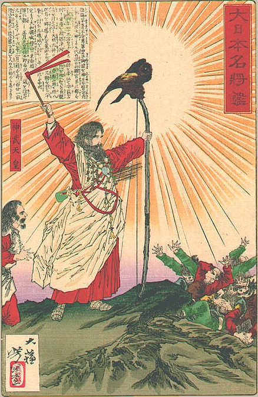
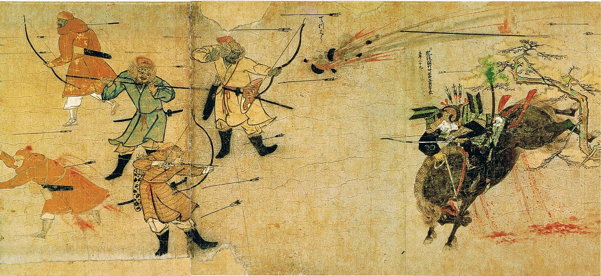
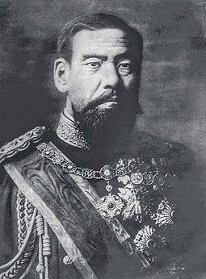

Japan (Japanese: 日本, Nippon or Nihon ; formally 日本国, Nippon-koku or Nihon-koku, lit. 'State of Japan') is an island country in East Asia. Located in the Pacific Ocean, it lies off the eastern coast of the Asian continent and stretches from the Sea of Okhotsk in the north to the East China Sea and the Philippine Sea in the south.

A Paleolithic culture around 30,000 BC constitutes the first known habitation of the Japanese archipelago. This was followed from around 14,000 BC (the start of the Jōmon period) by a Mesolithic to Neolithic semi-sedentary hunter-gatherer culture characterized by pit dwelling and rudimentary agriculture,[43] including by ancestors of contemporary Ainu people and Yamato people.[44][45] The Jōmon pottery and decorated clay vessels from this period are some of the oldest surviving examples of pottery in the world.[46][47] Around 300 BC, the Yayoi people began to enter the Japanese islands, intermingling with the Jōmon.[48] The Yayoi period, starting around 500 BC, saw the introduction of practices like wet-rice farming,[49] a new style of pottery[50] and metallurgy, introduced from China and Korea.[51]
Japan first appears in written history in the Chinese Book of Han.[52] According to the Records of the Three Kingdoms, the most powerful kingdom on the archipelago during the third century was called Yamataikoku.
Buddhism was introduced to Japan from Baekje, Korea and was promoted by Prince Shōtoku, but the subsequent development of Japanese Buddhism was primarily influenced by China.[53] Despite early resistance, Buddhism was promoted by the ruling class and gained widespread acceptance beginning in the Asuka period (592–710).[54] Due to the defeat in Battle of Baekgang by Chinese Tang empire, the Japanese government devised and implemented the far-reaching Taika Reforms. The Reform began with land reform, based on Confucian ideas and philosophies from China. It nationalized all land in Japan, to be distributed equally among cultivators, and ordered the compilation of a household registry as the basis for a new system of taxation.[55] The true aim of the reforms was to bring about greater centralization and to enhance the power of the imperial court, which was also based on the governmental structure of China. Envoys and students were dispatched to China to learn seemingly everything from the Chinese writing system, literature, religion, and architecture, to even dietary habits at this time. Even today, the impact of the reforms can still be seen in Japanese cultural life. After the reforms, the Jinshin War of 672, a bloody conflict between Prince Ōama and his nephew Prince Ōtomo, two rivals to the throne, became a major catalyst for further administrative reforms.[56] These reforms culminated with the promulgation of the Taihō Code, which consolidated existing statutes and established the structure of the central government and its subordinate local governments.[55] These legal reforms created the ritsuryō state, a system of Chinese-style centralized government that remained in place for half a millennium.[56]

The Nara period (710–784) marked an emergence of the centralized Japanese state centered on the Imperial Court in Heijō-kyō (modern Nara). The Nara period is characterized by the appearance of a nascent literature as well as the development of Buddhist-inspired art and architecture.[57] The smallpox epidemic of 735–737 is believed to have killed as much as one-third of Japan's population.[58] In 784, Emperor Kanmu moved the capital from Nara to Nagaoka-kyō, then to Heian-kyō (modern Kyoto) in 794.

Japan's feudal era was characterized by the emergence and dominance of a ruling class of warriors, the samurai. In 1185, following the defeat of the Taira clan in the Genpei War, sung in the epic Tale of Heike, samurai Minamoto no Yoritomo was appointed shōgun by Emperor Go-Toba. In 1192, the shōgun Yoritomo and the Minamoto clan established a feudal military government in Kamakura.[60] What distinguishes Japan from other countries is that Japan was near continuously ruled by the military class with the shōgun and the samurai in the top of the Japanese social structure for 676 years (from 1192 till 1868 CE). The Emperor was above the shōgun and revered as the sovereign, but merely a figurehead. The Imperial Court nobility was a nominal ruling court with little influence. The actual ruling class were Japanese military figures: the shōgun (military dictator), daimyo (feudal lords) and the samurai (military nobility and officers).[61][62] After Yoritomo's death, the Hōjō clan came to power as regents for the shōguns.
The Zen school of Buddhism was introduced from China in the Kamakura period (1185–1333) and became popular among the samurai class.[63] The Kamakura shogunate repelled Mongol invasions in 1274 and 1281, but was eventually overthrown by Emperor Go-Daigo. Emperor Go-Daigo was himself defeated by Ashikaga Takauji in 1336.
Ashikaga Takauji established the shogunate in Muromachi, Kyoto. This was the start of the Muromachi period (1336–1573). The Ashikaga shogunate achieved glory at the age of Ashikaga Yoshimitsu, and the culture based on Zen Buddhism (the art of Miyabi) prospered. This evolved to Higashiyama Culture, and prospered until the 16th century. On the other hand, the succeeding Ashikaga shogunate failed to control the feudal warlords (daimyōs) and a civil war (the Ōnin War) began in 1467, opening the century-long Sengoku period ("Warring States").[64]